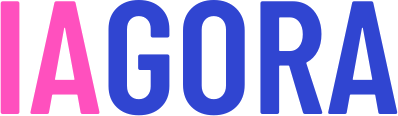

Sois précis
« Un golden retriever » plutôt que « un chien ». « Gigantesque » plutôt que « grand ». Remplace chaque [crochet] par un détail concret : la couleur, la matière, ce que fait ton sujet.

Atelier image · Aide au prompt · Tout publicAtelier IAgora
Choisis une vignette par catégorie : le texte du prompt se remplit tout seul, et tu peux le modifier à ta guise. En bas de page, ton prompt complet t'attend, prêt à copier dans Midjourney, ChatGPT, Mistral, Gemini, Firefly…
Une seule vignette par catégorie. Les mots entre [crochets] sont à remplacer par ta propre idée.
Ton image est prête ?
Quelques réflexes simples, tirés de la documentation officielle de Midjourney, qui marchent aussi avec la plupart des autres outils.
« Un golden retriever » plutôt que « un chien ». « Gigantesque » plutôt que « grand ». Remplace chaque [crochet] par un détail concret : la couleur, la matière, ce que fait ton sujet.
« Trois chats » plutôt que « des chats », « une volée d'oiseaux » plutôt que « des oiseaux ». Un nombre ou un nom collectif évite les surprises.
Écrire « sans voiture » peut… faire apparaître une voiture ! Décris plutôt ce qui doit être là. Pour exclure vraiment un élément, utilise --no voiture : le champ « À exclure » ci-dessus l'écrit pour toi.
Un prompt court laisse Midjourney choisir le style à ta place. Chaque catégorie remplie ici te redonne le contrôle : lumière, couleurs, cadrage, technique. Garde l'essentiel, sans répéter la même idée.
Ils commencent par deux tirets et se placent après le texte :
Midjourney propose 4 images. Garde la meilleure, puis modifie un seul élément (l'angle, le moment de la journée…) pour voir son effet. Si le résultat résiste, essaie le prompt traduit en anglais : les outils d'IA le comprennent souvent mieux.
Pour aller plus loin : Prompt Basics · liste des paramètres · --no · --stylize · --chaos (documentation Midjourney, en anglais)